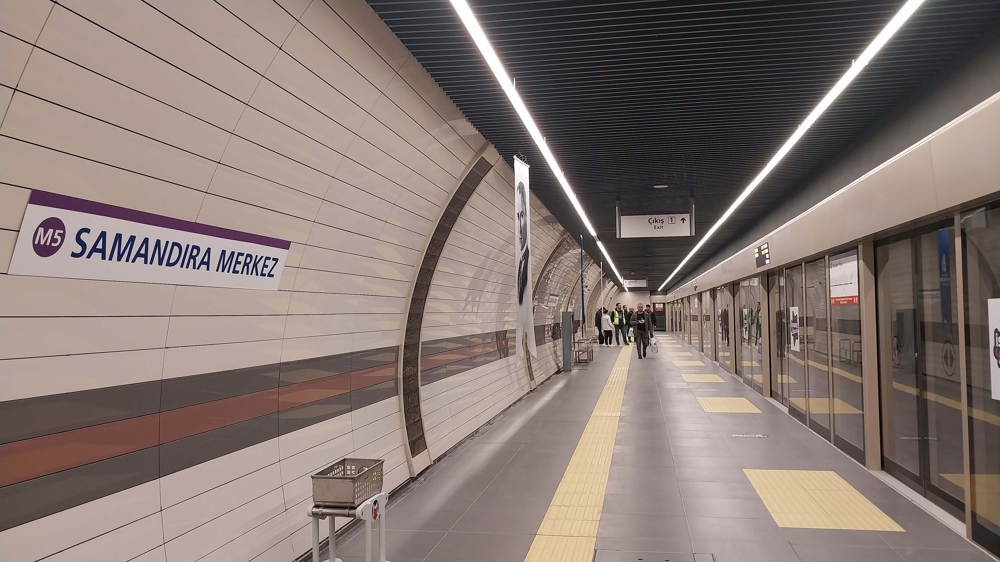
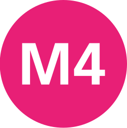
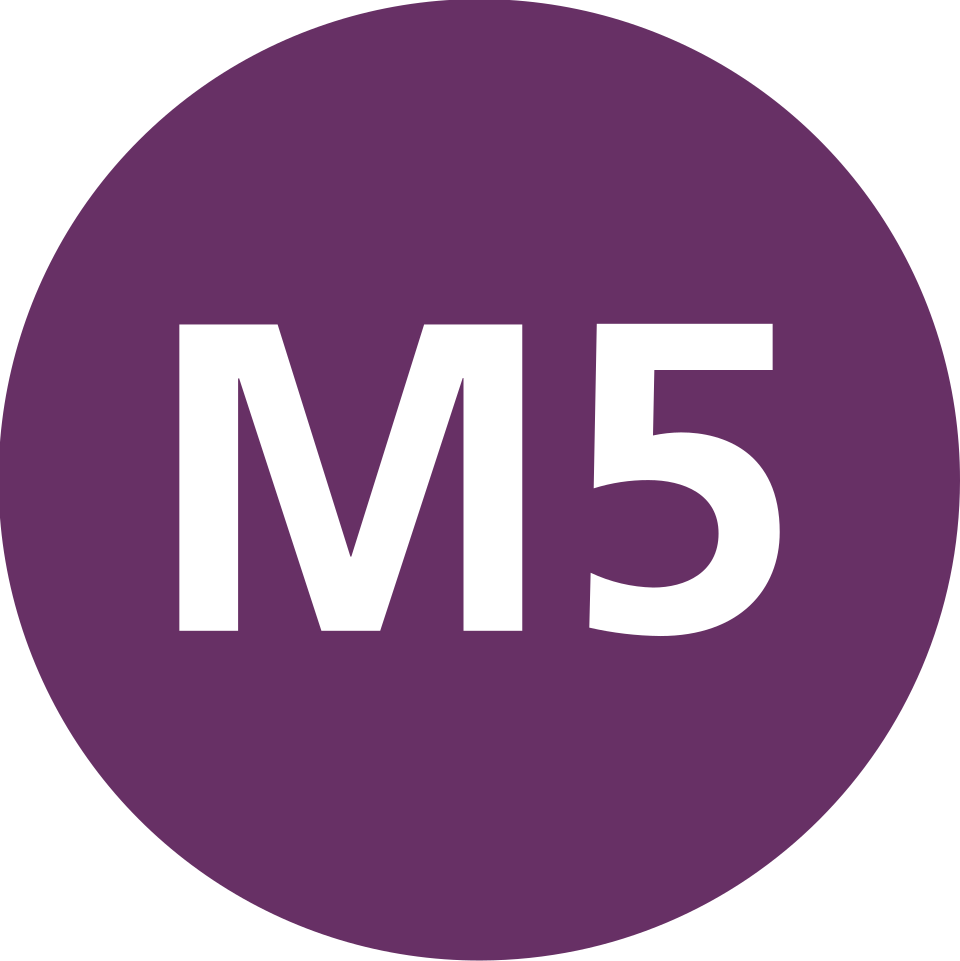
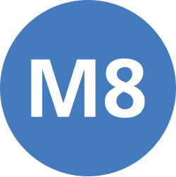
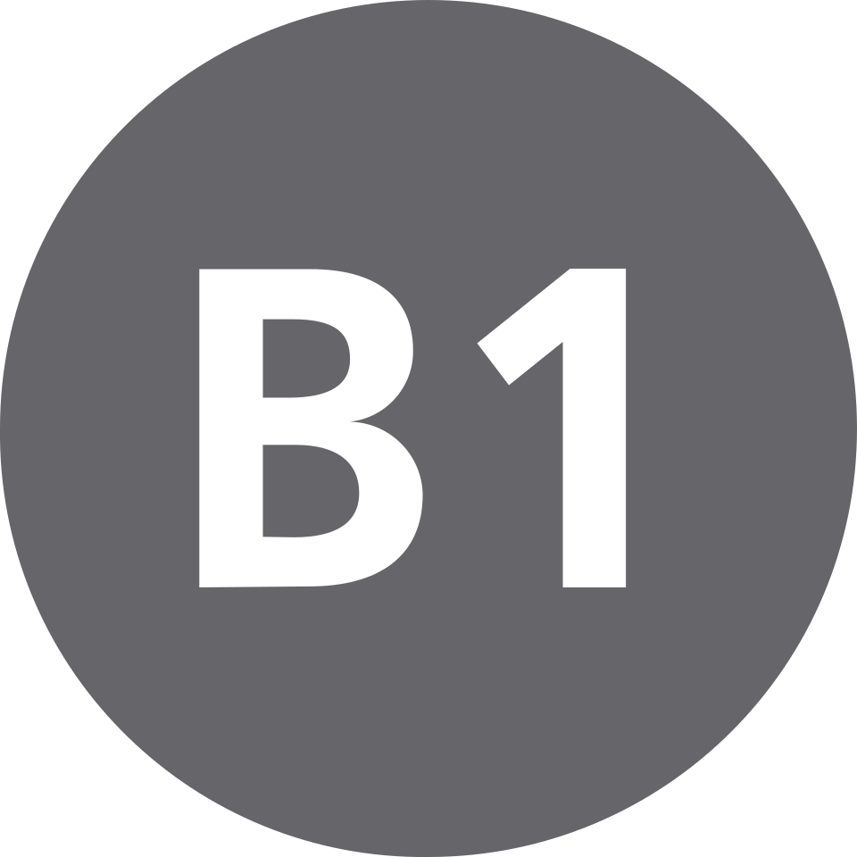

İşletmedeki Metro Hatları
İstanbul Anadolu Yakası'nda işletmedeki metro hatları.

M4 Kadıköy - Sabiha Gökçen Havalimanı Metro HattıSinyalizasyon: Thales SelTrac (GoA2, ATO, ATP)
İşletmeci: Metro İstanbul
Açılış: 17 Ağustos 2012 (Kadıköy-Kartal)
Uzunluk: 33,6 km
Tren Marka Model: CAF S60000
Kadıköy'den başlayarak İstanbul'un doğusuna uzanan Anadolu Yakası'nın ilk metro hattıdır. 2008 yılında inşaatına başlanmış, 2012 yılında Kadıköy - Kartal metrosu olarak hizmete girmiştir.

M5 Üsküdar - Sultanbeyli Metro HattıHat Türü: Sürücüsüz Metro
İşletmeci: Metro İstanbul
Açılış: 2017
Uzunluk: 20 km+
Anadolu Yakası'nın ilk sürücüsüz metro hattıdır.

M8 Bostancı - Parseller Metro HattıHat Türü: Metro
İşletmeci: Metro İstanbul
Açılış: 2023
Uzunluk: 14,3 km
Bostancı bölgesini Dudullu üzerinden kuzey ilçelerine bağlayan metro hattıdır.

Marmaray Anadolu Yakası KesimiSistem: Banliyö Raylı Sistem
İşletmeci: TCDD Taşımacılık
Açılış: 2013
Asya ve Avrupa yakalarını deniz altından birbirine bağlayan ulaşım sistemidir.